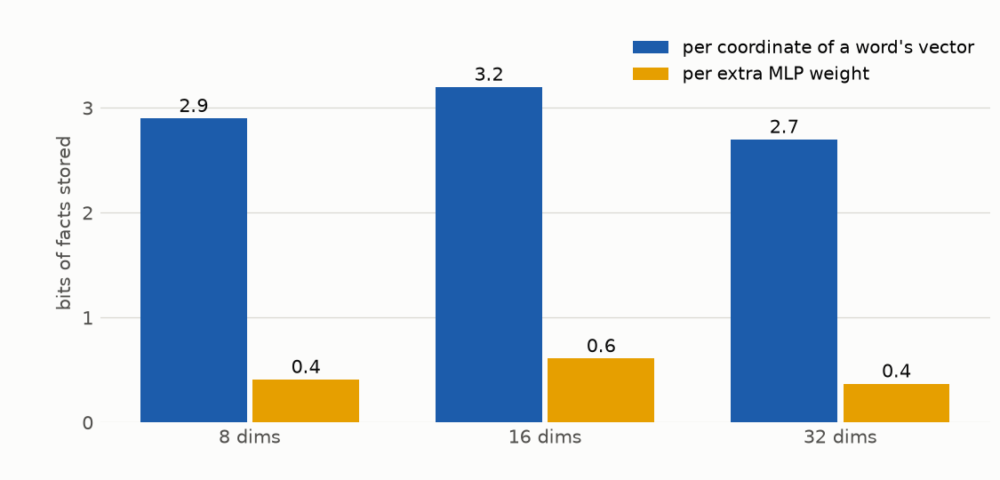

Small transformers store facts in the space their words live in
Preliminary results, November 2026
How much a model can remember depends mainly on the number of dimensions its words are represented in, not on its parameter count. At equal parameter count, the model with more dimensions knew more facts in every comparison that was not already at 100. Each coordinate of a word's vector stores about 3 bits of facts; an extra MLP weight stores about 0.5.
Setup. 2-layer, 2-head transformers are trained on a made-up language: 1,024 creatures, each with 8 to 128 bits of random facts, which the model is asked about. Two knobs are varied: the number of dimensions each word is represented in (8, 16, 32, 64, which is also the width of the residual stream) and the width of the MLP (4 to 128 neurons, up to 620 in a follow-up). 2,880 models (3 seeds each), plus 45 size-matched models. Score: facts answered correctly out of 100, where 25 is chance.
1. The dimensions set the limit; the MLP barely moves it
| 8 bits | 16 bits | 32 bits | 64 bits | 128 bits | |
|---|---|---|---|---|---|
| 8 dims | 100 | 93 | 65 | 52 | 42 |
| 16 dims | 100 | 100 | 96 | 77 | 59 |
| 32 dims | 100 | 100 | 100 | 100 | 87 |
| 64 dims | 100 | 100 | 100 | 100 | 100 |
Facts known (out of 100) by dimensions of the word vectors and bits of facts per creature; middle of 3 seeds, MLP of 128 neurons. Where dimensions and bits double together, the score changes far less than along a row (e.g. 93, 96, 100, 100). By contrast, at 8 dimensions and 128 bits, widening the MLP from 4 to 128 to 457 neurons gave 39, 42, 42.
2. At the same parameter count, more dimensions win

Every dot is one model. Each diamond is a lower-dimensional model whose MLP was widened (to 316 to 620 neurons) until it had as many trained parameters as the model with twice the dimensions, to within 0.07%. In all 8 pairs not both at 100, the higher-dimensional model knew more, by 4 to 23 points; in 6 of the 8, every seed scored below every seed of the higher-dimensional model.
3. A coordinate stores about 3 bits; an MLP weight about 0.5

Estimated on the 128-bit language, counting each fact as either known or guessed. The per-coordinate figure is nearly the same at every dimension. For comparison, Morris et al. (2025) measured about 3.6 bits per parameter in GPT-style models.
Next
- Is it the trained coordinates (storage) or the room between words (geometry)? Test: a frozen random 64-dimensional word table, with the parameter count matched.
- Is it the words' space or the model's width? Test: 8-dimensional words projected into a 64-wide model.
Limits: small models, synthetic data, one learning rate, training capped at 640,000 steps (the size-matched models were still improving slowly at the cap).